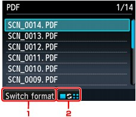

You can delete scanned data on the memory card or USB flash drive using the Operation Panel.
-
Make sure that the machine is turned on.
-
Press the SCAN button.
The screen for selecting to which you save the data is displayed.
 Note
Note-
If the Scan standby screen for forwarding the data to the USB-connected computer is displayed on the LCD, press the left Function button to display the screen for selecting to which you save the data.
-
-
Insert the memory card into the Card Slot or insert the USB flash drive into the Direct Print Port.
 Important
Important-
You cannot use the memory card and USB flash drive at the same time.
-
-
Select Memory card or USB flash drive, then press the OK button.
-
Select Delete scanned data, then press the OK button.
The file list is displayed.
Note-
You can preview the file to delete or switch the file list between PDF and JPEG.
-
Switch format
By pressing the left Function button, you can switch the display between the PDF data list and the JPEG data list.
-
Change display
By pressing the center Function button, you can switch the display between the list and the preview.
When the format for PDF data is selected, only the first page of the PDF data is displayed on the LCD.
-
-
-
Select the file to delete, then press the OK button.
-
Select Yes on the confirmation screen, then press the OK button.
The machine starts deleting the file.